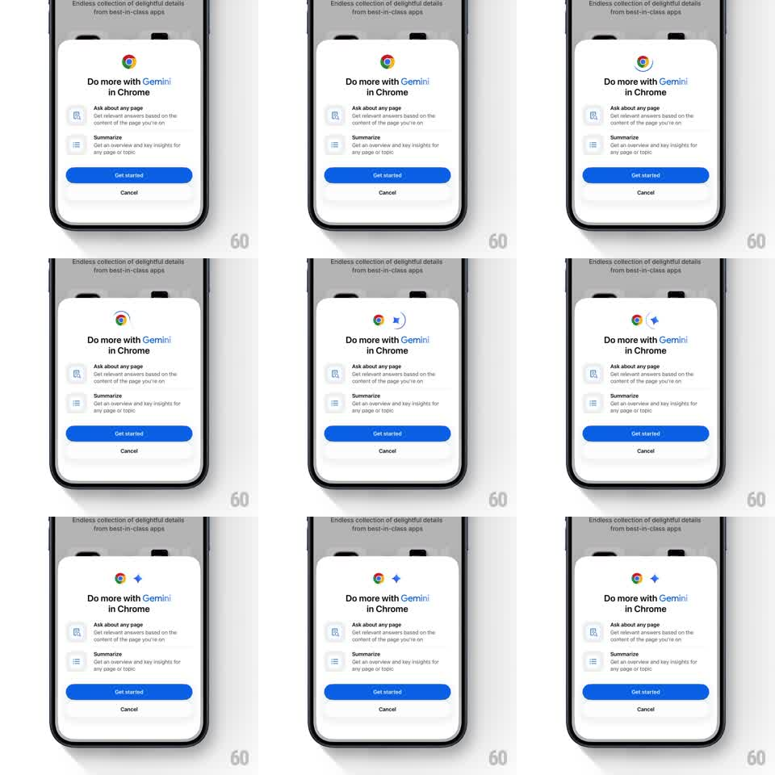

Media
Frame-by-frame

Rebuild this animation 1:1: Chrome's Gemini intro sheet - the Gemini sparkle star emerges from behind the Chrome logo and orbits around it while the feature sheet waits below.

Rebuild this animation 1:1: Chrome's Gemini intro sheet - the Gemini sparkle star emerges from behind the Chrome logo and orbits around it while the feature sheet waits below. ## Integration Integration: stack-agnostic spec - springs given as stiffness/damping, timed motions as duration + curve; map every value to your framework and animation library of choice. ## Scene White bottom sheet over a dimmed page: Chrome logo top-center, "Do more with Gemini in Chrome" headline (Gemini in gradient blue), two feature rows with icons (Ask about any page, Summarize), a blue "Get started" button, and a Cancel text button. ## Motion spec Pattern: sparkle star reveal-and-orbit around a static logo. - The four-point Gemini star scales in from behind the Chrome logo's right edge (scale 0 -> 1, spring ~300/16) with a 15-degree spin. - It then orbits the logo slowly (one revolution ~4s, ease-in-out) passing behind the logo at the back and in front at the bottom, scaling 0.8 at the back and 1.1 at the front for depth. - The star twinkles as it travels (opacity pulses 0.7 -> 1, 800ms, phase-offset from position). - Everything below the logo pair stays static. ## Calibration - The star is the Gemini gradient blue-violet; the Chrome logo never moves. - Orbit reads as a flat ellipse, not a circle - a badge circling its companion. ## Reduced motion Star appears beside the logo and twinkles in place; no orbit. ## Don't miss - The star ducks behind the logo cleanly - z-order swaps mid-orbit without popping. - The headline's gradient "Gemini" is static; only the star moves.